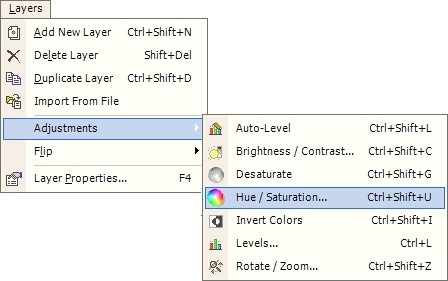
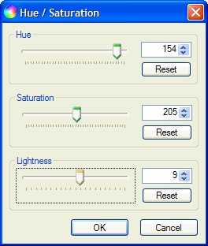

Hue / Saturation
|
 The Hue and Saturation of an image may be adjusted using Layers --> Adjustments --> Hue / Saturation. This operation may be used to change the saturation of colors, as well as rotate the hue of the image through the rainbow, additionally, it allows the adjustment of lightness.Shown on the right  The images below show the effect that these setting have on the image. |
Original Image
After Adjustment